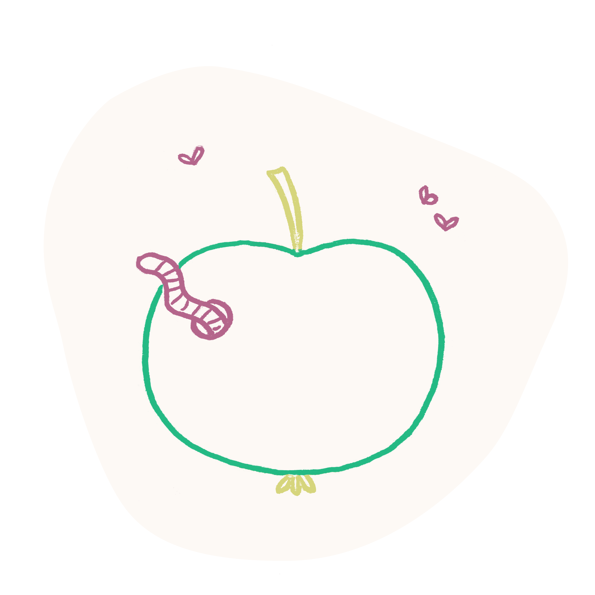

Wat is Nova Fructus fobie?
Angst is een beklemmende, onaangename emotionele toestand die wordt veroorzaakt door dreiging of gevaar. Angst wordt problematisch wanneer er een overmatige uiting is van normale angsten, zodanig dat deze het normaal dagelijks functioneren negatief beïnvloedt.
Nova Fructus Fobie is een angst voor vers fruit. Wanneer mensen met deze fobie zich in de buurt van vers fruit begeven, ervaren zij dit als een duidelijk waarneembare angst in sommige gevallen kan dit zo ernstig zijn dat men er paniekaanvallen van kan krijgen.
symptomen
Fructus Pestibus Fobie
Zeit ist kostbar. Schenken Sie besondere Erlebnisse, die lange in Erinnerung bleiben. Unsere sorgfältig ausgewählten Geschenke inspirieren zu einem erfüllten Leben – und tragen zu einem glücklichen Älterwerden bei.
Fructus Odores Fobie
Zeit ist kostbar. Schenken Sie besondere Erlebnisse, die lange in Erinnerung bleiben. Unsere sorgfältig ausgewählten Geschenke inspirieren zu einem erfüllten Leben – und tragen zu einem glücklichen Älterwerden bei.
Fructus Macula Fobie
Zeit ist kostbar. Schenken Sie besondere Erlebnisse, die lange in Erinnerung bleiben. Unsere sorgfältig ausgewählten Geschenke inspirieren zu einem erfüllten Leben – und tragen zu einem glücklichen Älterwerden bei.
De oorzaken van NFF
Nova Fructus Fobie kan ontstaan uit een combinatie van verschillende factoren. Meestal treedt er een combinatie van erfelijkheid en omgevingsfactoren om vooraleer we mogen spreken van een paniekstoornis.
Naast een eventuele predispositie om een paniekstoornis te ontwikkelen, heeft iedereen andere reacties op deze situaties. Je kiest dus zelf om angstig te reageren of de situatie als langdurig stressvol te ervaren. Dit is goed nieuws, aangezien dit wil zeggen dat je niet gedoemd bent tot het ontwikkelen van een paniekstoornis bij erfelijke factoren. Tevens wil het zeggen dat je bij jezelf de sleutel tot behandeling kan vinden.
Wat kan je er aan doen?
Therapie is de effectiefste vorm om angst te behandelen. In het algemeen bestaat een therapie bij angst uit therapeutische interventies, geïnspireerd op de cognitieve gedragstherapie. In deze vorm van therapie worden angst symptomen onderzocht. Hiervoor gaat men op zoek naar het gedrag dat men stelt ten gevolge van angstige gedachten en wat de gevoelens zijn die met deze symptomen en de angst situatie samen hangen.
Hulp nodig?